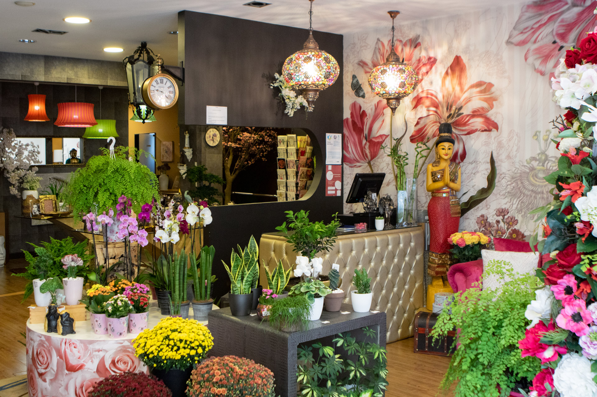

A Poesia Botânica
Mais do que uma florista, criámos um ateliê de design floral onde a natureza cresce livremente para trazer harmonia, cor e frescura ao seu quotidiano.

O Ateliê de Criação
A nossa mesa de trabalho é o ponto de origem de todas as composições. Selecionamos espécies botânicas pela sua resistência, forma e textura, privilegiando vasos de cerâmica artesanal e materiais orgânicos que respeitam a estética da planta.
Aqui nascem arranjos personalizados que não procuram apenas decorar, mas sim transformar a qualidade do ar e a energia do espaço que habitam.
Cores com Significado
A frescura dos nossos ramos de corte traz o campo diretamente para a cidade. Desde a paixão vibrante dos cravos vermelhos até à suavidade das flores da época, trabalhamos as cores como quem escreve uma frase: com intenção, ritmo e delicadeza.


Harmonia e Inspiração
A nossa zona de acolhimento reflete a fusão estética do nosso conceito. Sob uma iluminação quente, as plantas de interior fundem-se com elementos artísticos e tapetes florais dramáticos.
Este ambiente foi planeado para inspirar quem nos visita, demonstrando como a vegetação viva pode coexistir pacificamente com a decoração de interiores.
O nosso refúgio verde
Um ecossistema natural dentro de portas.